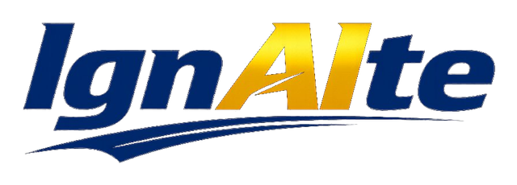
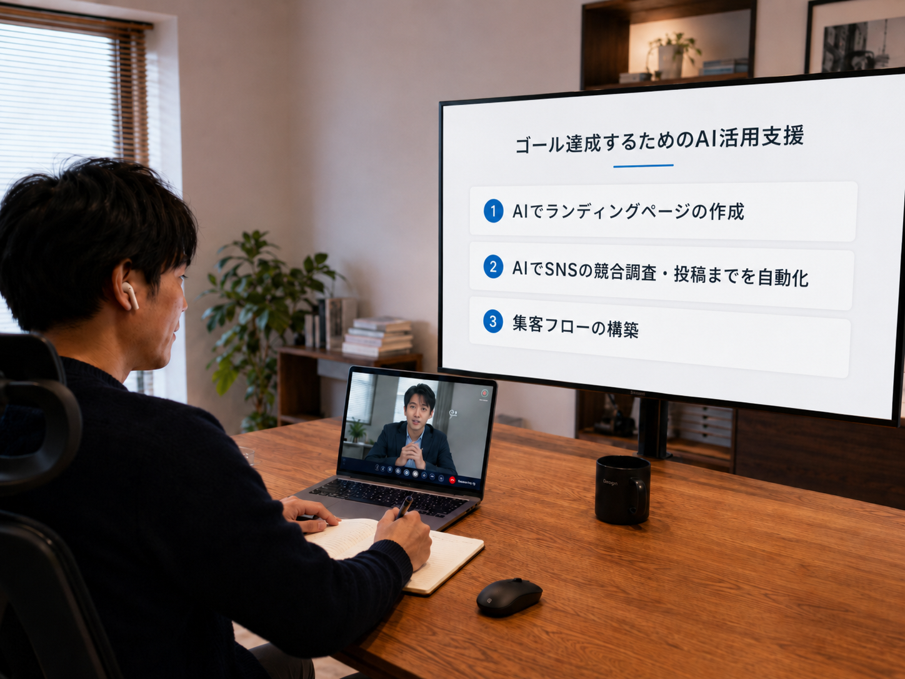

責任は広がり仕事も増えた。
でも、近々給与は
大きくは変わらない。
リーダー職や主任を任され仕事の責任範囲は広がった。
次の大きな昇進・昇給はしばらく先なのも見えている。
でも正直、大企業の役職と安定は手放せない。

【無料】LINEで今すぐ相談 ↗
出勤前や夕食後、そして休日の朝などに
1時間だけ使って毎月20時間だけ。
今の役職と家族との時間を守りながら、会社の外に収入源をつくる。
リーダー職や主任を任され仕事の責任範囲は広がった。
次の大きな昇進・昇給はしばらく先なのも見えている。
でも正直、大企業の役職と安定は手放せない。
高い家賃、家族の生活費、分割払い返済、奨学金返済、保険料支払い、積み立て金。毎月の支払いを終えると、手元に残るお金はわずか。
周囲からは成功しているように見られるからこそ、本当はお金に余裕がないとは言いにくい。
会社員として積み重ねた経験を、
会社の外で対価を得られるサービスへ変える。
キャリア、担当業務、役割、成果を棚卸しし、あなたが副業で提供できる価値を言語化。
本業と家庭を崩さず、生成AIも活用しながら、毎月20時間だけで副業案件を進める方法を一緒に見つけていきます。
仕事用スーツをオーダーメイドで新調、子どもを私立に通わせる教育費を貯めるなどして、お金を理由に将来の選択肢を諦めない状態を目指します。
業務スキルと、無意識に発揮している仕事上の能力を掛け合わせ、成果を出しやすい副業を特定します。
業務コンサルをする
実務を代行する
目標達成を伴走支援
講師・研修をする
キャリア、担当業務、役割、成果を棚卸しして業務スキルを可視化。認知科学コーチングにより、本人が無意識に発揮している能力も特定し、取り組む副業と3か月のゴールを決めます。
プロフィール作成、応募文面作成、案件応募の見極めなども丁寧にサポートして案件獲得を目指します。

案件を受注したら、これまでのスキルを活かして実行していきます。生成AIも活用して業務効率化しながら本業の負担にならずに最初の収益化を目指します。
副業決定、案件獲得、納品まで、次にやることを一緒に決めます。
案件を継続しながら時間単価を高める行動計画を持って、独り立ちします。
月20時間の副業で、
月20万円。
※上記は支援後に目指す目標であり、成果を保証するものではありません。案件の状況や取り組みにより、進捗・成果は異なります。
定期セッションとLINEで進捗を確認。応募、商談、納品の各段階で、うまくいったこととつまずいたことを整理し、次の行動を一緒に決めます。
YUSUKE YAMAMOTO
PROFILE
無料相談では、現在の仕事内容と生活状況を確認し、副業へ変えられそうな業務スキルと最初の一歩を一緒に整理します。
ご登録後、LINEから無料相談をお申し込みいただけます。